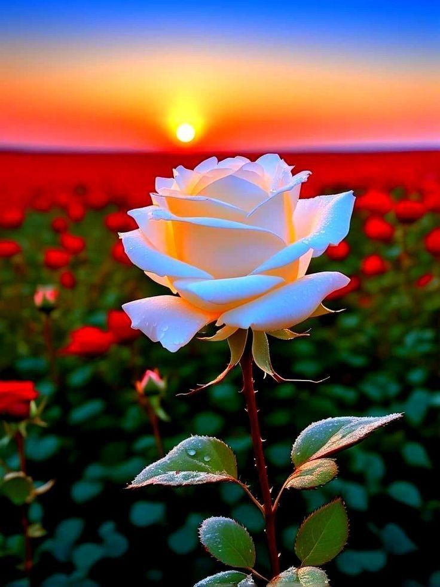
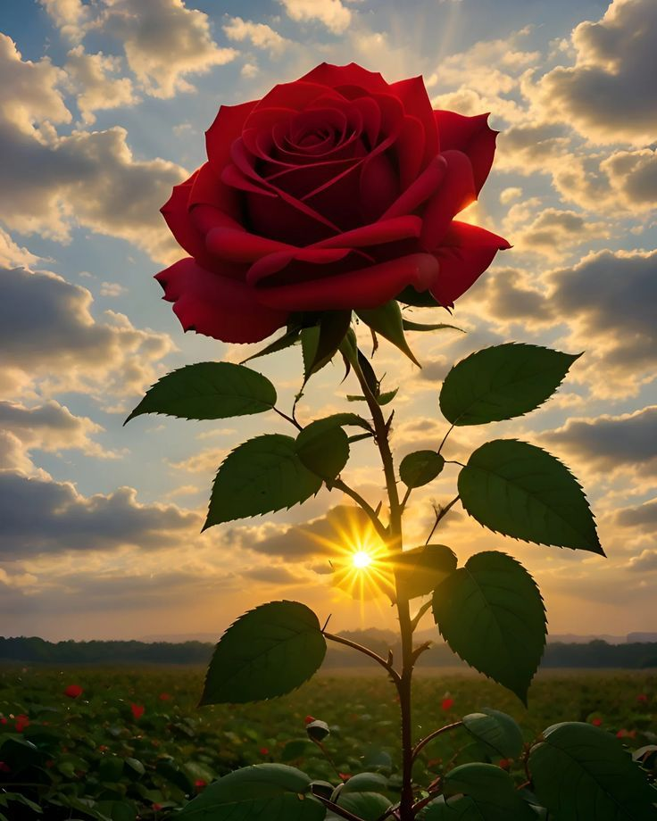
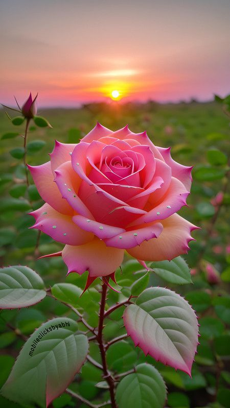

Blue Rose
Meaning: Mystery & UnattainableSince blue roses do not exist in nature, they represent the impossible, the mysterious, and a longing for the unreachable.

Dewy Pink Rose
Meaning: Freshness & New RomanceThe morning dew on a pink rose symbolizes a fresh start, innocence, and the blossoming of a new, gentle admiration.

Sunset White Rose
Meaning: Purity & Eternal HopeA white rose glowing under the sunset represents pure intentions and the hope that lingers even as the day ends.

Velvet Red Rose
Meaning: Deep Passion & CourageThe classic symbol of profound love. Its deep red hue speaks of passion, respect, and creative spirit.

Pink Magnolia Rose
Meaning: Grace & AppreciationThese shaded petals symbolize elegance and refined beauty. It is the perfect flower to say "Thank you" with grace.